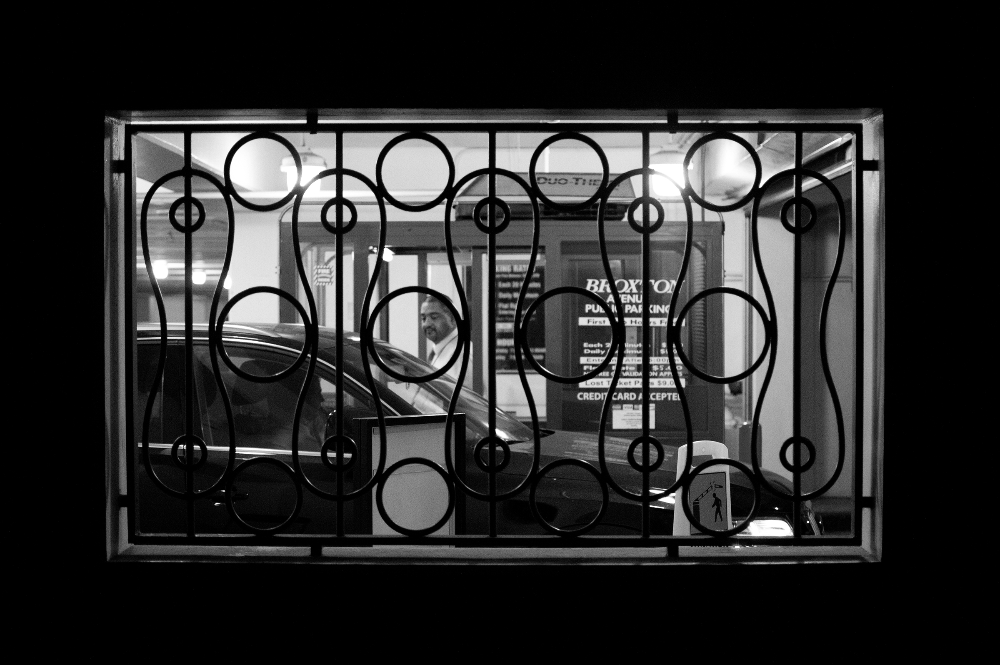

Urban Space: Street Photography
Coming from my small hometown in Hawaii, I have always been fascinated by street photography and the ways in which humans approach urban settings. Ever since I moved to Los Angeles, this interest has since become a full-fledged passion of
mine, and I continue to photograph the urban environment around me. My photographic work explores the complexities, consequences, and questions raised in the idea of an “urban space,” and what it means to navigate and be framed by it. How do
we use the urban environment, and how does the urban environment use us? How does the division and control of these spaces impact the relationships humans have with themselves, with each other? What is left of the urban space if we remove
people entirely?
As someone who grew up enamored by the hazy, dreamlike mythology of Los Angeles and Southern California, my hope is that the work enables the public to think more critically about the potential downfalls and consequences of these spaces, and how we may best face them moving forward.
As someone who grew up enamored by the hazy, dreamlike mythology of Los Angeles and Southern California, my hope is that the work enables the public to think more critically about the potential downfalls and consequences of these spaces, and how we may best face them moving forward.


Allen's: Bird Photography
During the research and creation of Allen's Hummingbird: A Scientific and Poetic Study, I photographed its presence and behavior at the Mildred E. Mathias Botanical Garden. These
select photographs were key to my creative approach and design proposal for the bird, and served as the foundation of its identity in the work.